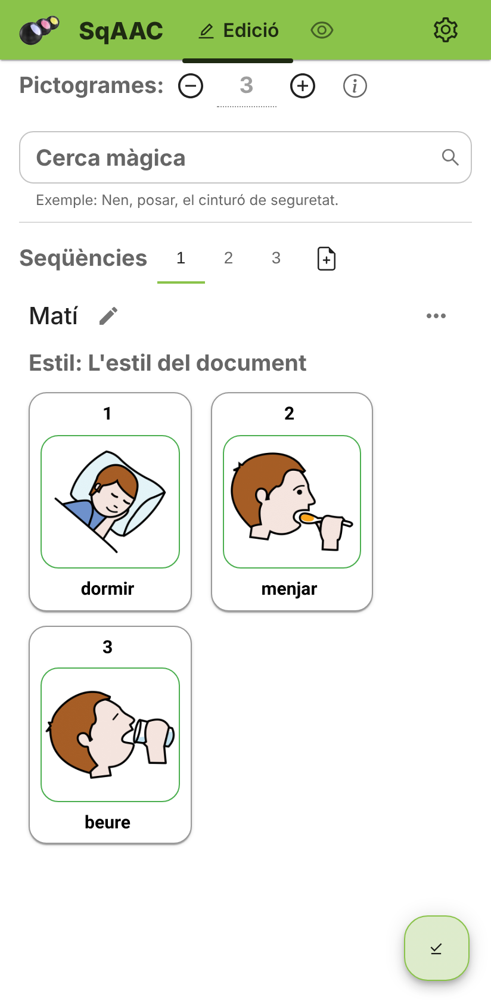
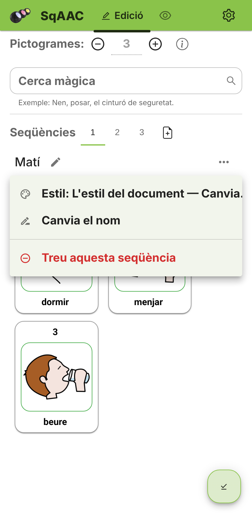
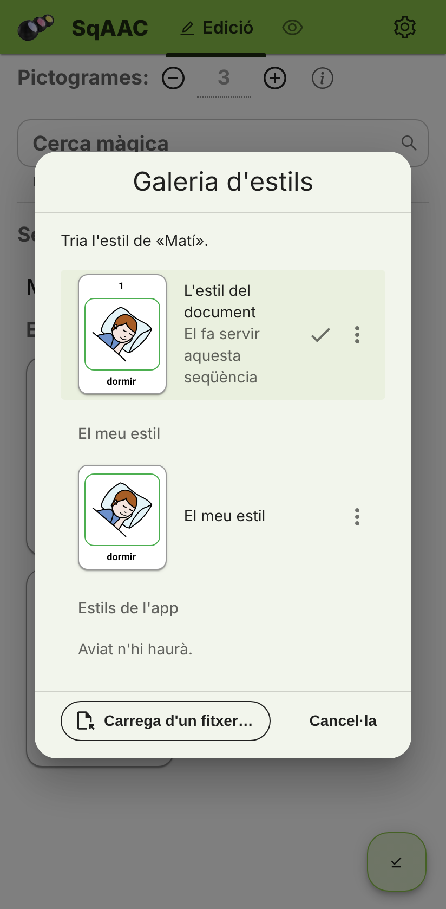
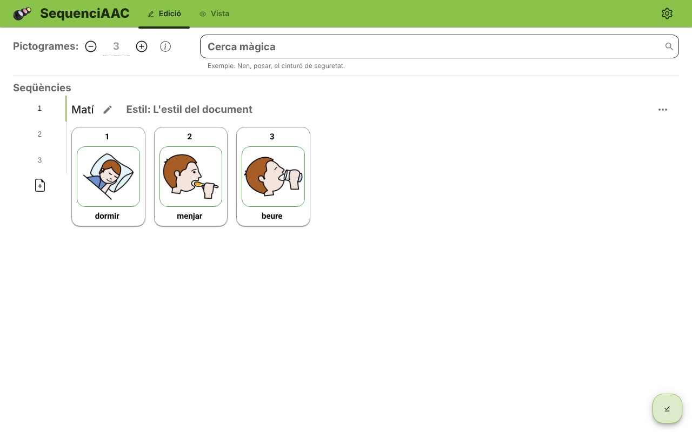
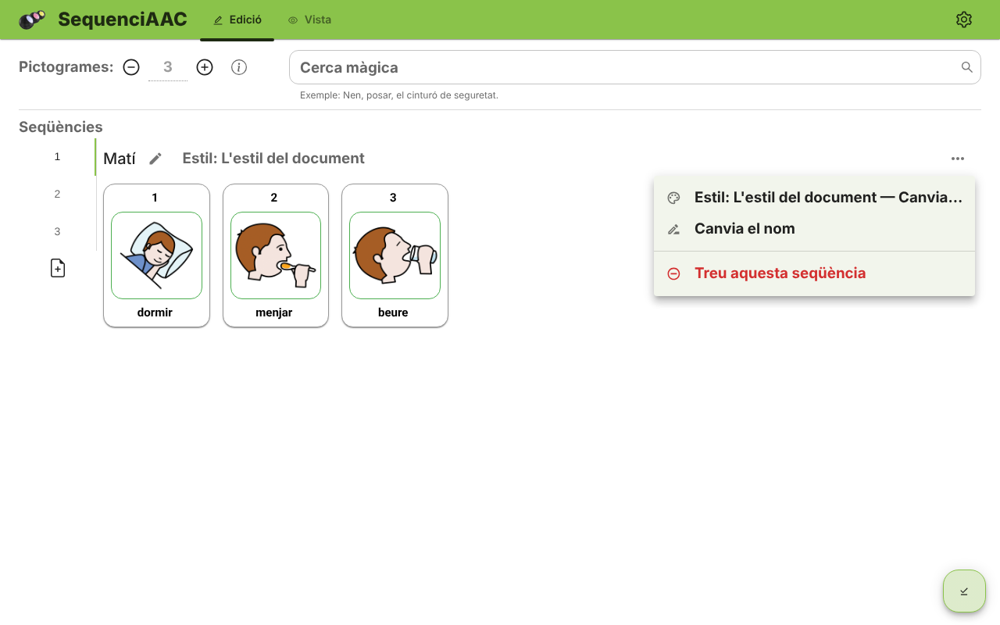

Esbós v1 · docs/plans/PLA-estils.md · pas 7 (§10.4)
La pantalla d'edició nova que proposa el pla per al mòbil: el nom i l'estil de la seqüència a dalt, la graella al mig i la cerca a baix, a l'abast del polze. Es passa de seqüència lliscant sobre la graella o amb les fletxes ‹ ›. Toca la cerca per veure com puja la barra amb el teclat. A sota hi ha les captures de com és avui i les preguntes que queden abans del pas 8.
Amb la capçalera de la seqüència del pas 5. La cerca màgica i el comptador de pictogrames són a dalt, i la graella queda sota la tira de pestanyes.





PictogramAmount (afegir i treure l'últim) se'n van: afegir és al «+», i treure un pictograma és a la graella.E1La línia «Estil: …» sota la capçalera, o només dins del «⋯»?
A 390 px hi cap, però es menja 30 px de graella. Dins del «⋯» ja hi és sempre.
E2D23: l'escriptori
E3La cerca màgica, dins del camp (✨) o com a botó a part?
E4Al mòbil girat, l'edició